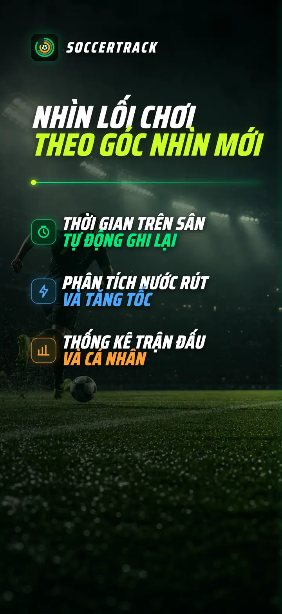
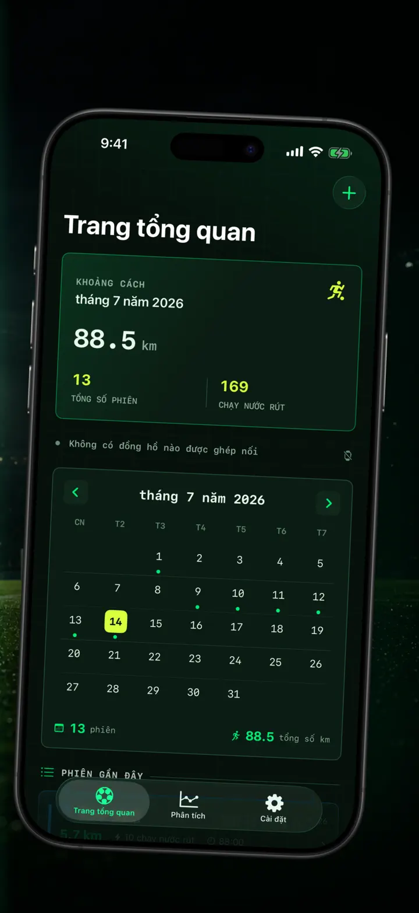
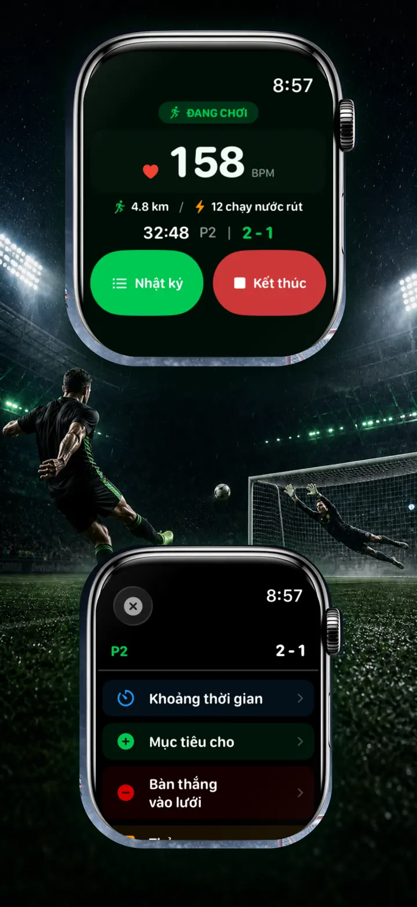
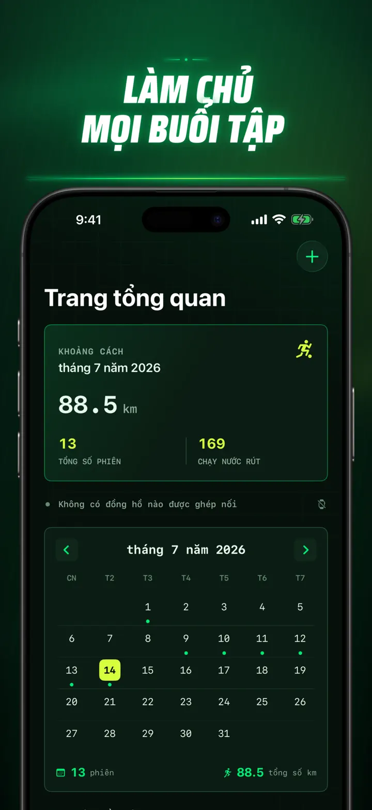
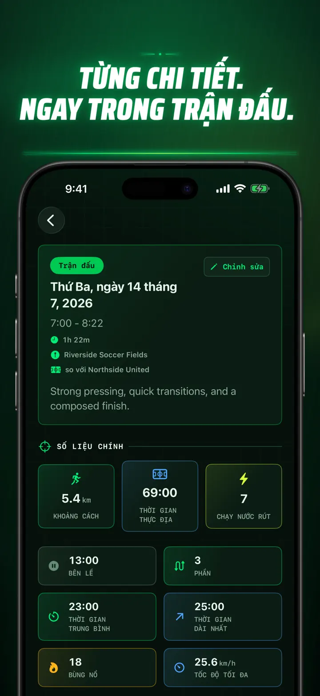
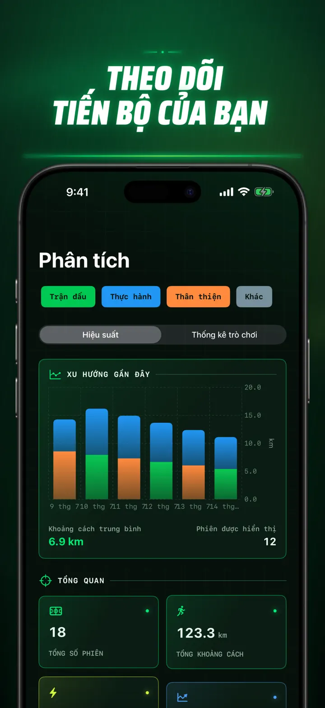
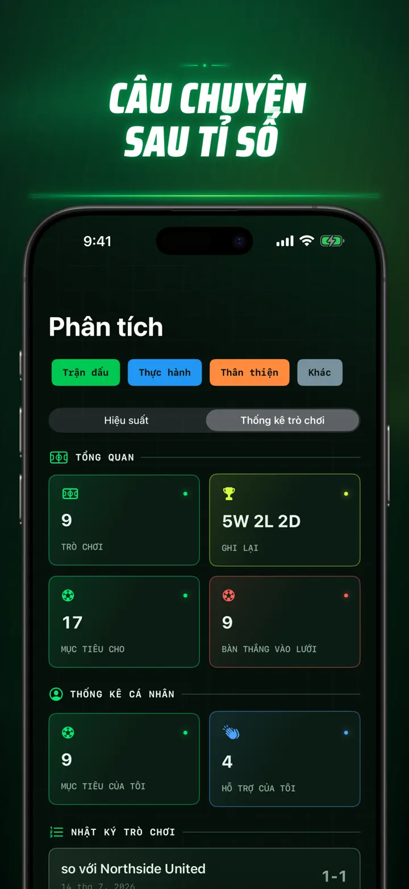
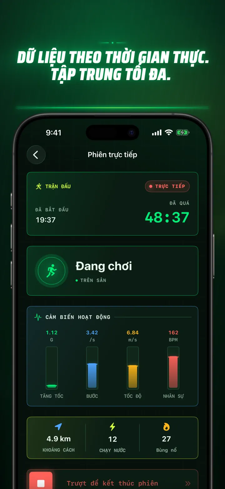
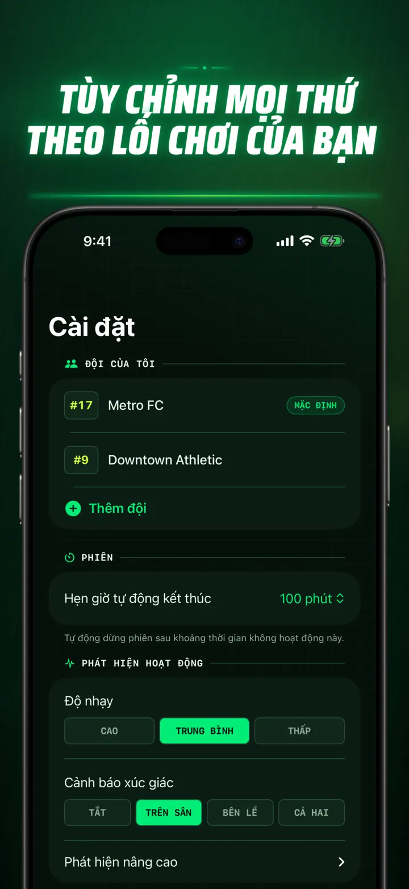
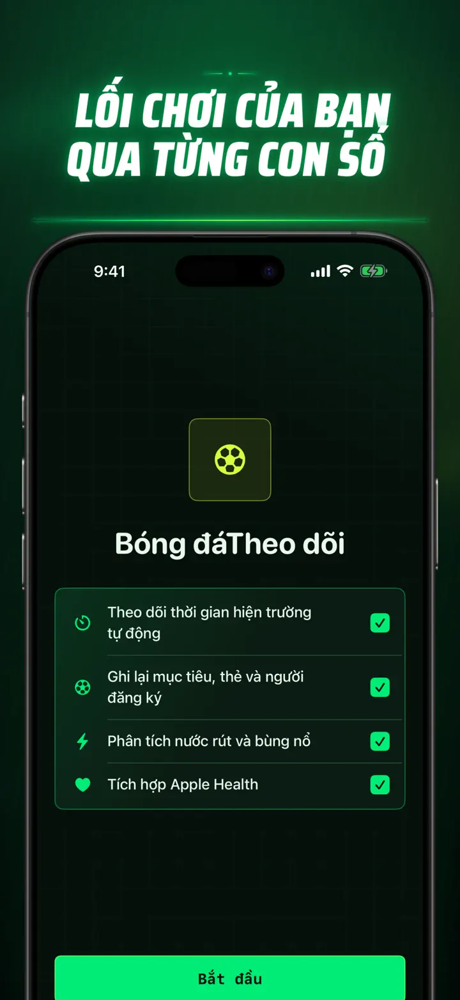

Soccer Time Track
Bóng đá: thời gian & phân tích
Bắt đầu một buổi rồi vào sân. Apple Watch tự tách thời gian thi đấu và dự bị, đồng thời ghi chỉ số trực tiếp, nước rút, sự kiện và xu hướng.
Tải xuống từ App Store
Giới thiệu ứng dụng
Nhìn trận đấu của bạn theo một cách khác.
Soccer Time Track biến Apple Watch thành trợ lý ngày thi đấu cho cầu thủ muốn hiểu nhiều hơn tỷ số cuối cùng. Bắt đầu ngay trên cổ tay, tập trung chơi bóng rồi xem bức tranh chi tiết về hiệu suất trên iPhone.
TỰ ĐỘNG TÍNH THỜI GIAN TRÊN SÂN
Biết chính xác khi nào bạn thực sự thi đấu. Tín hiệu chuyển động, bài tập và vị trí giúp phân biệt thời gian chơi, hoạt động nhẹ và ngồi dự bị. Bạn sẽ có:
- Thời gian trên sân và dự bị
- Các giai đoạn thi đấu cùng dòng thời gian rõ ràng
- Phân tích chi tiết diễn biến của toàn bộ buổi
NGÀY THI ĐẤU NGAY TRÊN CỔ TAY
Chọn Trận đấu, Tập luyện, Giao hữu hoặc Khác. Trong lúc chơi, hãy ghi:
- Bàn thắng của hai đội
- Bàn thắng và kiến tạo của bạn
- Thẻ vàng và thẻ đỏ
- Thay người và chuyển hiệp
TRẬN ĐẤU CỦA BẠN, ĐƯỢC ĐO LƯỜNG
Không chỉ có số phút, bạn còn biết:
- Quãng đường
- Tốc độ trung bình và tối đa
- Nước rút và các pha bứt tốc cường độ cao
- Nhịp tim và calo hoạt động
- Nhịp bước và gia tốc
DỮ LIỆU TRỰC TIẾP, TẬP TRUNG TRỌN VẸN
iPhone đã ghép đôi có thể hiển thị chỉ số trực tiếp trong khi Apple Watch tiếp tục ghi bài tập. Bạn tập trung vào trận đấu, còn dữ liệu được thu thập trong nền.
THEO DÕI TIẾN BỘ
Lưu trận đấu, buổi tập, giao hữu và các buổi khác trong một lịch sử. Khám phá xu hướng và kỷ lục cá nhân, so sánh hiệu suất, đồng thời thêm đội, số áo, đối thủ, địa điểm và ghi chú để giữ lại câu chuyện của từng kết quả.
Cần dùng dữ liệu ở nơi khác? Xuất buổi tập, giai đoạn thi đấu và sự kiện trận đấu dưới dạng CSV hoặc JSON.
DÀNH CHO APPLE WATCH VÀ APPLE HEALTH
Khi được bạn cho phép, Soccer Time Track dùng dữ liệu bài tập, nhịp tim, chuyển động và vị trí để tạo phân tích và lưu các bài tập bóng đá đã hoàn thành vào Apple Health. Tính năng tự động yêu cầu Apple Watch. Bạn cũng có thể thêm buổi thủ công trên iPhone.
DỮ LIỆU CỦA BẠN, TRẬN ĐẤU CỦA BẠN
Các buổi được giữ trên thiết bị của bạn và, khi bật Đồng bộ hóa iCloud, trong cơ sở dữ liệu iCloud riêng tư của bạn. Soccer Time Track không yêu cầu tài khoản, không có quảng cáo và không dùng phân tích của bên thứ ba.
Đừng đoán mình đã chơi bao lâu. Hãy xem bạn đã làm được gì trong từng phút.
Chính sách quyền riêng tư: https://masawata.net/SoccerTimeTrack/privacy-policy.html Điều khoản dịch vụ: https://www.apple.com/legal/internet-services/itunes/dev/stdeula/
Ảnh chụp màn hình









Soccer Time Track
Bắt đầu một buổi rồi vào sân. Apple Watch tự tách thời gian thi đấu và dự bị, đồng thời ghi chỉ số trực tiếp, nước rút, sự kiện và xu hướng.
Tải xuống từ App Store